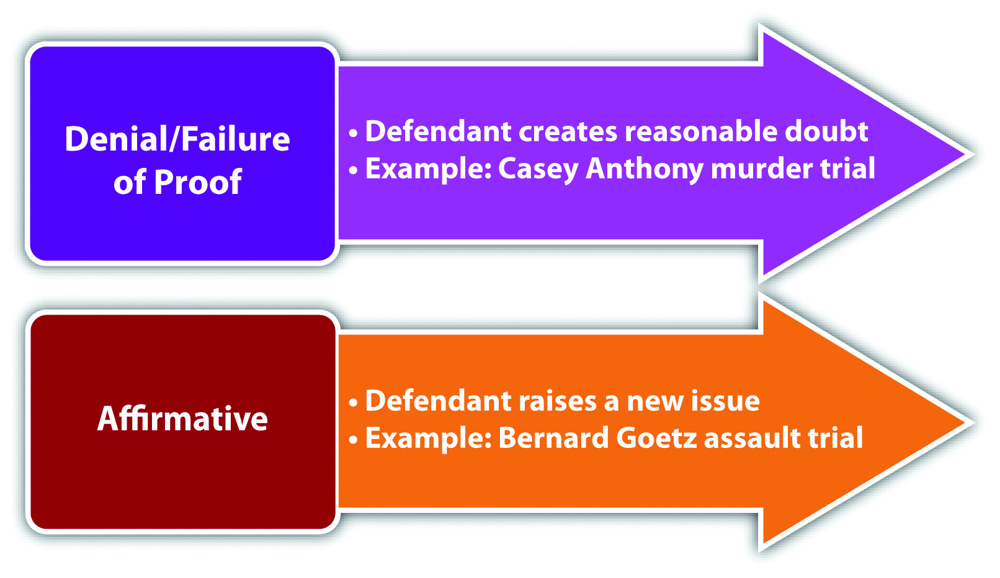
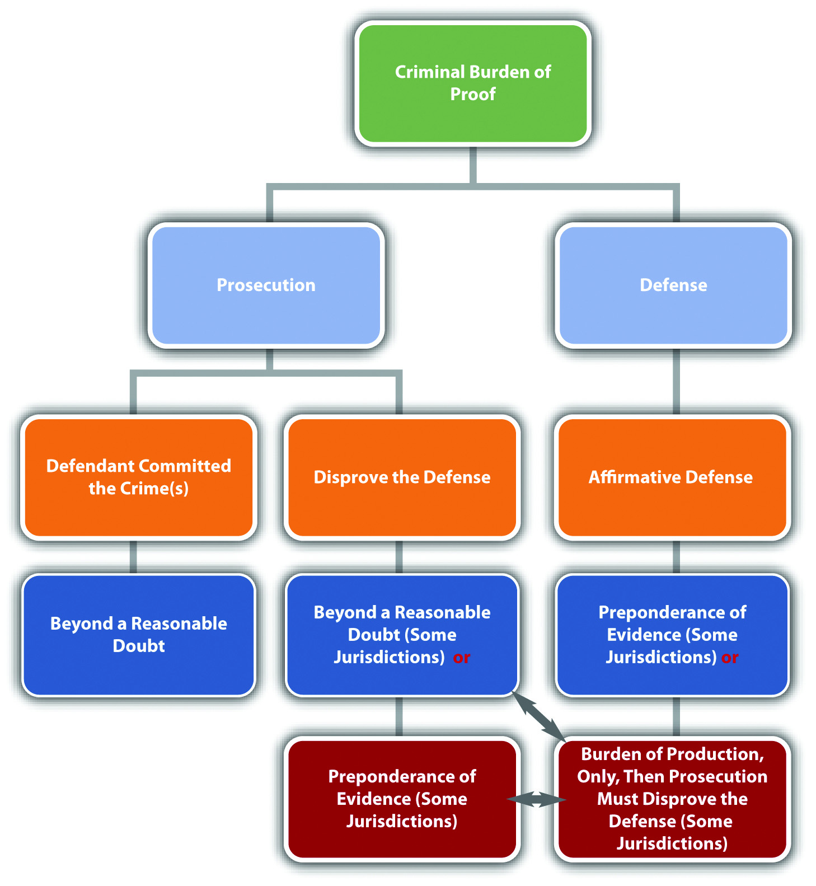

A plethora of criminal defenses exist. Defenses may completely exonerate the criminal defendant, resulting in an acquittal, or reduce the severity of the offense. Chapter 3 "Constitutional Protections" discussed defenses based on the federal Constitution. This chapter reviews the categorization of nonconstitutional criminal defenses, along with the elements of various defenses sanctioning the use of force.
Defenses can be categorized as denial or failure of proof, affirmative, imperfect, or perfect. Defenses can also be categorized as factual, legal, based on justification, or excuse. Lastly, defenses can be created by a court (common lawA defense created by a court.), or created by a state or federal legislature (statutoryA defense created by a state or federal legislature.).
As stated in Chapter 2 "The Legal System in the United States", a criminal defendant will be acquitted if the prosecution cannot prove every element of the offense beyond a reasonable doubt. In certain cases, the defendant can either deny that a criminal element(s) exists or simply sit back and wait for the prosecution to fail in meeting its burden of proof. This legal strategy is sometimes referred to as either a denial or failure of proof defenseThe defendant denies that an element of the offense exists and prevents the prosecution from meeting its burden of proof..
An affirmative defenseA defense that raises an issue separate from the elements of a crime. is not connected to the prosecution’s burden of proof. When the defendant asserts an affirmative defense, the defendant raises a new issue that must be proven to a certain evidentiary standard. State statutes often specify whether a defense is affirmative. The Model Penal Code defines an affirmative defense as a defense that is deemed affirmative in the Code or a separate statute, or that “involves a matter of excuse or justification peculiarly within the knowledge of the defendant” (Model Penal Code § 1.12 (3) (c)). Procedurally, the defendant must assert any affirmative defense before or during the trial, or the defense cannot be used as grounds for an appeal.
A fight breaks out at a party, and Juan is severely injured. Jasmine and Jerome are arrested and charged for battering Juan. Jerome claims that he did not touch Juan; someone else battered him. Jasmine claims that she did not batter Juan because she was legally defending herself against Juan’s attack. Jerome’s claim focuses on the elements of battery and asserts that these elements cannot be proven beyond a reasonable doubt. Technically, Jerome can do nothing and be acquitted if the prosecution fails to prove that he was the criminal actor. Jasmine’s self-defense claim is an affirmative defense. Jasmine must do something to be acquitted: she must prove that Juan attacked her to a certain evidentiary standard.
Figure 5.1 Denial and Affirmative Defenses
As stated in Chapter 2 "The Legal System in the United States", states vary as to their requirements for the defendant’s burden of proof when asserting an affirmative defense.Findlaw.com, “The Insanity Defense among the States,” findlaw.com website, accessed October 11, 2010, http://criminal.findlaw.com/crimes/more-criminal-topics/insanity-defense/the-insanity-defense-among-the-states.html. Different defenses also have different burdens of proof. Some states require the defendant to meet the burden of production, but require the prosecution to thereafter meet the burden of persuasion, disproving the defense to a preponderance of evidence, or in some states, beyond a reasonable doubt. Other states require the defendant to meet the burden of production and the burden of persuasion. In such states, the defendant’s evidentiary standard is preponderance of evidence, not beyond a reasonable doubt. In the example given in Section 5 "Example of an Affirmative Defense", for Jasmine’s self-defense claim, Jasmine must prove she was defending herself by meeting either the burden of production or the burden of production and persuasion to a preponderance of evidence, depending on the jurisdiction.
Figure 5.2 Diagram of the Criminal Burden of Proof
As stated previously, a defense can reduce the severity of the offense, or completely exonerate the defendant from criminal responsibility. If a defense reduces the severity of the offense, it is called an imperfect defenseA defense that reduces the severity of the offense.. If a defense results in an acquittal, it is called a perfect defenseA defense that results in an acquittal if successful.. The difference between the two is significant. A defendant who is successful with an imperfect defense is still guilty of a crime; a defendant who is successful with a perfect defense is innocent.
LuLu flies into a rage and kills her sister Lola after she catches Lola sleeping with her fiancé. LuLu is thereafter charged with first-degree murder. LuLu decides to pursue two defenses. First, LuLu claims that the killing should be manslaughter rather than first-degree murder because she honestly but unreasonably believed Lola was going to attack her, so she thought she was acting in self-defense. Second, LuLu claims she was insane at the time the killing occurred. The claim of manslaughter is an imperfect defense that will reduce LuLu’s sentence, but will not acquit her of criminal homicide. The claim of insanity is a perfect defense that will result in an acquittal.
A defense must be based on specific grounds. If a defense is based on an issue of fact, it is a factual defenseA defense based on an issue of fact.. If a defense is based on an issue of law, it is a legal defenseA defense based on an issue of law..
Armando is charged with the burglary of Roman’s residence. Armando decides to pursue two defenses. First, Armando claims that he was with Phil on the date and time of the burglary. This is called an alibi defenseA factual defense that claims the defendant was somewhere else when the crime occurred.. Second, Armando claims that it is too late to prosecute him for burglary because of the expiration of the statute of limitationsA legal defense that claims too much time has elapsed since the defendant committed the crime, so the prosecution can no longer legally prosecute the defendant.. Armando’s alibi defense is a factual defense; it is based on the fact that Armando could not have committed the burglary because he was somewhere else at the time it occurred. Armando’s statute of limitations defense is a legal defense because it is based on a statute that limits the amount of time the government has to prosecute Armando for burglary.
With the exception of alibi, most affirmative defenses are based on either justificationThe basis for an affirmative defense that claims criminal conduct is justified under the circumstances. or excuseThe basis for an affirmative defense that claims the defendant should be excused for his or her conduct.. Typically, justification and excuse defenses admit that the defendant committed the criminal act with the requisite intent, but insist that the conduct should not be criminal.
A defense based on justification focuses on the offense. A justification defense claims that the defendant’s conduct should be legal rather than criminal because it supports a principle valued by society. A defense based on excuse focuses on the defendant. An excuse defense claims that even though the defendant committed the criminal act with criminal intent, the defendant should not be responsible for his or her behavior.
Review the examples of affirmative, imperfect, and perfect defenses given in Section 5.1.1 "Categorization of Defenses". Jasmine’s self-defense claim is based on justification. Society believes that individuals should be able to protect themselves from harm, so actions taken in self-defense are justified and noncriminal. Note that a self-defense claim focuses on the offense (battery) in light of the circumstances (to prevent imminent harm). LuLu’s insanity claim is based on excuse. Although LuLu killed Lola with criminal intent, if LuLu is truly insane it is not be fair or just to punish her for her behavior. Note that an insanity claim focuses on the defendant (a legally insane individual) and whether he or she should be criminally responsible for his or her conduct.
Table 5.1 Categorization of Defenses
| Defense Type | Characteristics |
|---|---|
| Common-law | Created by a court |
| Statutory | Created by a state or federal legislature |
| Denial or failure of proof | Creates doubt in one or more elements of the offense and prevents the prosecution from meeting its burden of proof |
| Affirmative | Raises an issue separate from the elements of the offense |
| Imperfect | Reduces the severity of the offense |
| Perfect | Results in an acquittal |
| Factual | Based on an issue of fact |
| Legal | Based on an issue of law |
| Alibi | Asserts that the defendant was somewhere else when the crime was committed |
| Expiration of the statute of limitations | Asserts that it is too late for the government to prosecute the defendant for the crime |
| Justification | Claims that the criminal conduct is justified under the circumstances |
| Excuse | Claims that the defendant should be excused for his or her conduct |
Answer the following questions. Check your answers using the answer key at the end of the chapter.